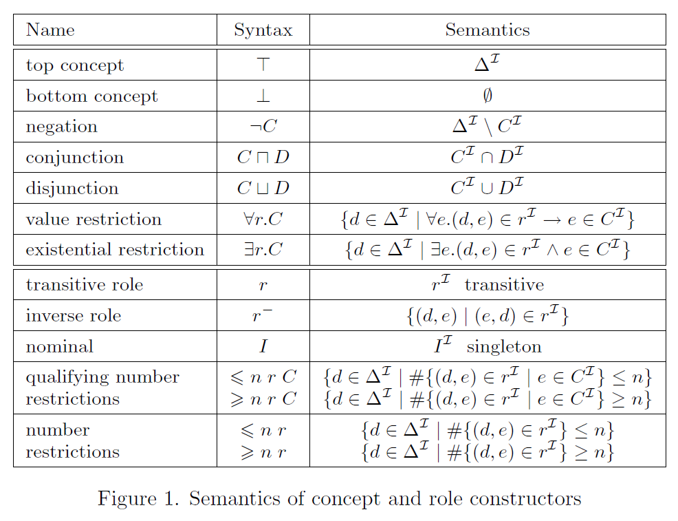

2 定义
论域必须是非空的，可以是无穷集合。论域中的元素可以称为实例（instance）。
概念名称（concept name）：类名，外延是论域的有限子集，可以看作一元谓词。
作用名称（role name）：关系名，表示论域中的二元关系，可以看作二元谓词。
“ role ”为何翻译为“作用”？
role 有人直译为“角色”，有人更一般的翻译为“关系”，而“作用”是更恰当的翻译。理由如下，在大英百科全书中 role 有词条：“a function or part performed especially in a particular operation or process”，其中 function 可以翻译为作用，另外， role 本质上是算子，算子就是作用于对象之上的，因此，role 翻译为“作用”更为恰当。概念描述（concept description）：用概念名称和作用名称按照语法规则构成的句子，表示对一些实例的抽象描述/刻画。
概念定义（defined concept）：将概念描述定义为一个概念名称。
名词概念（nominal concept）：外延只有一个元素的概念名称。
个体名称（individual name）：个体名，只能出现在 \(ABox\) 中，表示论域中的单个元素。
实例断言（instance assertion）：断言一个个体名称是一个概念名称的实例。
概念模型（concept patterns）：含有变量的概念描述。
2.1 \(\mathcal{ALC}\)
\(\mathcal{ALC}\) 是带补语的定语语言（Attributive Language with Complements），由 Schmidt-Schauß 和 Smolka 在 1991 年提出，是基本的描述逻辑语言。
2.1.1 \(\mathcal{ALC}\) 的语法(Syntax)
2.1.2 语义(Semantic)
映射 \(\cdot^{\mathcal{I}}\) 可以扩展到 \(\top, \bot\) 以及复杂概念中：
通常，将 \(C^{\mathcal{I}}\) 读作概念名称 \(C\) 在解释 \(\mathcal{I}\) 中的外延 (\(extension\))，若 \(C^{\mathcal{I}} \neq \emptyset\) ，则称解释 \(\mathcal{I}\) 是概念描述 \(C\) 的一个模型。
2.1.3 有向标记图(Directed Labeled Graph)
一个解释可以自然的用一个有向标号图来表示，其中每个节点表示一个概念名称，每个边表示一个作用名称。例如：

对应如下的解释：
2.1.4 \(\mathcal{ALC}\) 是多模态逻辑
描述逻辑 \(\mathcal{ALC}\) 是多模态逻辑 \(\mathcal{K}_{(m)}\) 的变体是由 Schild 于 1991 发现的 \(^{[1]}\) 。概念名称看作命题，作用名称看作可通达关系。 \(\mathcal{ALC}\) 的解释就是一个克里普克结构，其中 \(\Delta^{\mathcal{I}}\) 是世界集，\(\cdot^{\mathcal{I}}\) 既提供世界集上的可通达关系集又给出对命题的赋值。于是基于可通达关系 \(r\) ，全称约束 \(\forall r.C\) 成为 \(\Box_r C\) ，存在约束 \(\exists r.C\) 成为 \(\lozenge_r C\) 。将 \(\mathcal{ALC}\) 翻译到一阶逻辑（FOL）的通常方法也和模态逻辑的标准翻译一致。
2.1.5 \(\mathcal{SHOIQ}\) \(^{*}\)

\(\mathcal{SHOIQ}\) 的重要性源于它（及其片段）在描述逻辑的两个最有影响力的应用领域中的使用：关于概念数据库模型的推理和语义网中的推理。在后一种应用中， \(\mathcal{SHOIQ}\) 的片段对应于 W3C（World Wide Web Consortium） 推荐的标准 Web 本体语言 OWL-DL 。
Other
The World Wide Web Consortium (W3C) is the international organization dedicated to the development of HTML and other related languages used in the creation of websites. In just 25 years, W3C has enabled, thanks to its standards, the emergence of an open, interoperable and accessible Web for everyone, everywhere: HTML, CSS and more than 400 other Web technologies on which all websites are based, and which consolidate the entertainment, communications, digital publishing and even finance industries.
2.1.6 \(\mathcal{AL}\) 家族 \(^{*}\)
\(\mathcal{AL}\ :\ C,D \longrightarrow A\ |\ \top\ |\ \bot\ |\ \neg A\ |\ C \sqcap D\ |\ \forall r.C\ |\ \exists r.\top\)

Question
疑问：\(\exists r.\) 和 \(\forall r.\) （以及 \(\sqcap\) 和 \(\sqcup\)）是对偶算子，为何会影响可判定性和计算复杂度？
2.2 知识库 \(KB\)
知识库 \(KB = (TBox, ABox)\)
2.2.1 \(TBox\)（Terminological Formalisms）
通常的定义是：一个 \(TBox\ \mathcal{T}\) 是形如 \(A \equiv C\) 的概念定义的有限集合，其中 \(A\) 是概念名称， \(C\) 是概念描述，并且同一个 \(A\) 在 \(\mathcal{T}\) 中只出现一次。这时， \(A\) 称作 \(\mathcal{T}\) 中的原始概念。
- 如果概念名称 \(B\) 在 \(C\) 中出现，则称 \(A\) 直接使用 \(B\) ，将"使用"理解为"直接使用"的传递闭包。
- 若 \(\mathcal{T}\) 中存在一个原始概念使用了它本身，则称 \(\mathcal{T}\) 含有循环（或一般的 \(\mathcal{T}\)），否则称为无环的 \(\mathcal{T}\) 。
Example
\(Human \equiv Adam \sqcup Eve \sqcup \exists parent.Human\) 就是含有循环的定义
无环 \(TBox\) 的模型：
- 如果 \(A^{\mathcal{I}} = C^{\mathcal{I}}\) 则解释 \(\mathcal{I}\) 满足概念定义 \(A \equiv C\) 。
- 如果解释 \(\mathcal{I}\) 满足 \(TBox\ \mathcal{T}\) 中的所有概念定义，则解释 \(\mathcal{I}\) 是 \(\mathcal{T}\) 的模型。
一般的 \(TBox\) 的模型：
- general concept inclusion axioms (GCIs)： \(GCI\) 是形如 \(C \sqsubseteq D\) 的形式，其中 \(C,D\) 都是（复合）概念描述。
Example
\(Person \sqcap \exists uncle.Father \sqsubseteq \exists cousin.Person\) 表示：所有有当父亲的叔叔的人都有表兄妹
- 如果 \(C^{\mathcal{I}} \subseteq D^{\mathcal{I}}\) 则解释 \(\mathcal{I}\) 满足 \(GCI\ \ C \sqsubseteq D\) 。
- 如果解释 \(\mathcal{I}\) 满足 \(GCI\ \ A \sqsubseteq C,\ C \sqsubseteq A\) 则解释 \(\mathcal{I}\) 满足概念定义 \(A \equiv C\) 。
Notes
\(\mathcal{T}\) 可以归结为有限个 \(GCI\) 构成的集合。
蕴含式 \(C \rightarrow D\) 存在模型当且仅当在这个模型中 \(C \sqsubseteq D\)。理解为：所有的 \(C\) 都是 \(D\) 。
- 如果解释 \(\mathcal{I}\) 满足 \(TBox\ \mathcal{T}\) 中的所有概念定义，则解释 \(\mathcal{I}\) 是 \(\mathcal{T}\) 的模型。
\(TBox\) 和模态逻辑的关系 \(^{*}\)
其中， \(\mathcal{T}\) 是由 \(GCIs\) 构成的集合， \(U^{\mathcal{I}} = \Delta^{\mathcal{I}} \times \Delta^{\mathcal{I}}\) ，于是 \(C_{\mathcal{T}}^{\mathcal{I}} := \Delta^{\mathcal{I}}\)
Question
为何不是
这样定义的话，如果解释 \(\mathcal{I}\) 满足 \(C_{\mathcal{T}}\) 则也满足 \(\mathcal{T}\) 。
作者提到和 universal modality 有关。
2.2.2 \(ABox\)（assertional formalism）
设有可数无穷个个体名称 \(a,b,c\) 等等， \(ABox\) 是形如 \(C(a),\ r(a,b)\) 的断言的有限集合，其中 \(C\) 是概念描述， \(r\) 是作用描述。
- 对每个个体 \(a\) 解释为 \(a^{\mathcal{I}} \in \Delta^{\mathcal{I}}\) ，通常遵守唯一名称假设（ \(a \neq b 蕴含 a^{\mathcal{I}} \neq b^{\mathcal{I}}\) ）。
- 如果 \(a^{\mathcal{I}} \in C^{\mathcal{I}}\) 则解释 \(\mathcal{I}\) 满足概念断言 \(C(a)\) 。
- 如果 \((a^{\mathcal{I}},b^{\mathcal{I}}) \in r^{\mathcal{I}}\) 则解释 \(\mathcal{I}\) 满足作用断言 \(r(a,b)\) 。
- 如果解释 \(\mathcal{I}\) 满足 \(ABox\ \mathcal{A}\) 中的所有断言，则解释 \(\mathcal{I}\) 是 \(\mathcal{A}\) 的模型。
\(ABox\) 和模态逻辑的关系 \(^{*}\)
其中 \(u^{\mathcal{I}} = \Delta^{\mathcal{I}} \times \Delta^{\mathcal{I}}\) ，并且假设每个个体名都存在一个同名的名词（nominals）。于是任意一个 \(C_{\mathcal{A}}\) 的模型也是 \(\mathcal{A}\) 的模型。事实上名词比 \(ABox\) 具有更强的表达力。
2.2.3 用知识库 KB 刻画语义模型 \(^{*}\)
In another area of DL research, its model theory, we investigate which kinds of semantic structure, i.e., interpretations or models, we can describe in a KB \(^{[2]}\).
参考文献
- [1] Klaus Schild. A correspondence theory for terminological logics: Preliminary report. In Proc. of the 12th Int. Joint Conf. on Artificial Intelligence (IJCAI’91), pages 466–471, 1991.
- [2] Franz Baader, Ian Horrocks, Carsten Lutz, Uli Sattler - An Introduction to Description Logic - Cambridge University Press (2017). 3
- [3] Manfred Schmidt-Schauß and Gert Smolka. Attributive concept descriptions with complements. Artificial Intelligence, 48(1):1–26, 1991.